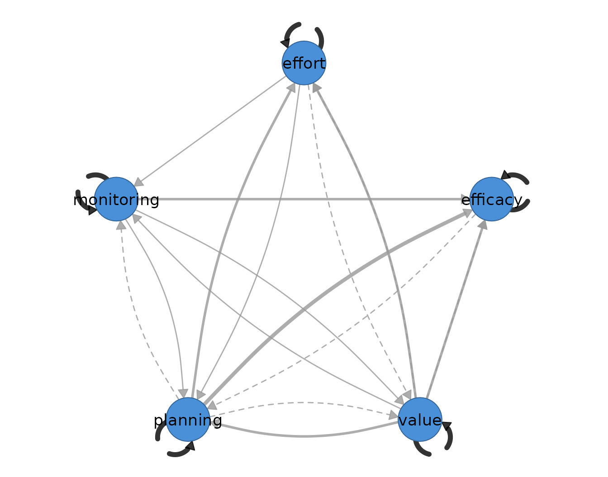
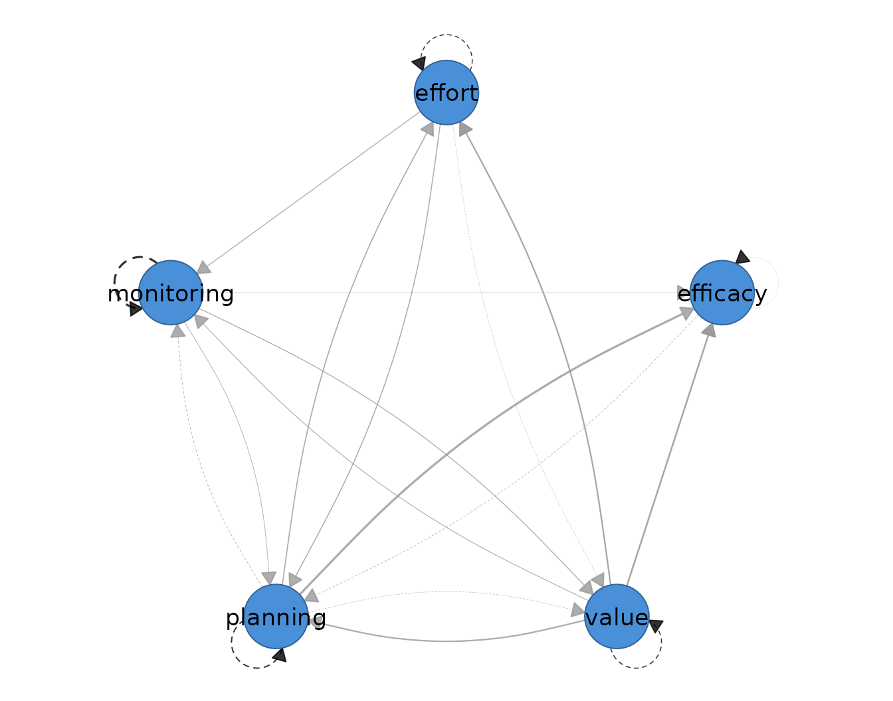

Group iterative multiple model estimation (GIMME) sits at the boundary of idiographic and group inference. It estimates a person-specific unified structural equation model for each individual — one structural model per person, fitted to that person’s own ordered series — while searching for paths that recur in a sufficient proportion of individuals and promoting those to a shared group level. The estimand is therefore double: every subject receives an idiographic dynamic model, and the group model records which pieces of structure the sample holds in common. Like the other lag-one models in this package, it presumes weakly stationary series, linear lag-one dynamics, and correctly ordered, approximately equally spaced occasions within each person.
Two kinds of within-person path enter the search. A temporal path
from -> to is a directed lag-one path within a person’s
series: the value of from at occasion
predicts the value of to at occasion
,
holding the other lagged variables constant. A contemporaneous path is a
directed within-occasion path: from predicts
to at the same occasion, over and above what the lagged
variables explain. Unlike the graphical VAR, whose contemporaneous layer
is an undirected partial-correlation network, GIMME places directed SEM
paths within an occasion as well as across occasions. The weight
displayed on a GIMME edge is the proportion of subjects whose individual
model carries that path — path prevalence — not a regression
coefficient; a weight of 1 states that every subject has the path and by
itself says nothing about the size or sign of the effect. The per-person
coefficients live in the individual models and are reported
separately.
This placement distinguishes GIMME from its neighbours. Multilevel
VAR (fit_mlvar()) pools all subjects into a single
fixed-effect average temporal matrix and treats person-level departures
as random effects around it; GIMME instead keeps one structural model
per person and asks which paths replicate. Unified SEM
(fit_usem()) fits the same person-specific model class for
a single subject, with no group search; GIMME is the multi-subject
extension that adds the replication rule. The method is appropriate when
theory expects both shared pathways and person-specific deviations, and
when the question is which is which.
Data and preprocessing
The estimator expects long format: one row per person-occasion, an id
column, an ordering column, and numeric time-varying indicators. The
supplied anonymized esm_srl data hold momentary
self-regulated-learning indicators for 41 students; name
identifies the student and occasion orders measurements
within student. Five indicators enter the model: efficacy,
value, planning, monitoring, and
effort. To keep the vignette fast without hand-picking
people for their fitted networks, the example uses the four students
with the most complete five-indicator occasions, breaking ties
alphabetically.
vars <- c("efficacy", "value", "planning", "monitoring", "effort")
complete_n <- tapply(complete.cases(esm_srl[vars]), esm_srl$name, sum)
selection <- data.frame(subject = names(complete_n),
complete = as.integer(complete_n))
selection <- selection[order(-selection$complete, selection$subject), ]
selected_ids <- head(selection$subject, 4)
head(selection, 4)
#> subject complete
#> 15 Hana 79
#> 17 Iker 79
#> 19 Jamal 79
#> 29 Omar 79
preprocess(esm_srl[esm_srl$name %in% selected_ids, ],
vars = vars, id = "name")
#> Idiographic Preprocessing
#> Variables: 5 (efficacy, value, planning, monitoring, effort)
#> Ordered rows: 316
#> Retained pairs: 312
#> Trend flags: 10
#> High AR flags: 0
#> Drift flags: 4
#> Unit-root risk: 0
#> Zero variance: 0
#> Tables: x$pairs | x$counts | x$diagnostics
#>
#> 10 of 20 subject-series show a trend or unit-root that can bias the temporal network. preprocess() only diagnosed this; to clean just the series that need it, re-run with:
#> preprocess(data = esm_srl[esm_srl$name %in% selected_ids, ], vars = vars, id = "name", detrend = "auto")The transparent rule selects Hana, Iker, Jamal, and Omar, each with 79 complete five-indicator occasions. The audit is shown rather than silently assuming stationarity; these supplied series contain trend or shift flags, so the fit is a method demonstration and its paths should not be treated as confirmatory substantive findings.
Fitting the model
The estimator takes the data, the variable set, the id column, and
the time column; time = "occasion" orders occasions within
each student. ar = TRUE places an autoregressive path on
every variable in every subject’s model from the outset, which anchors
the search. groupcutoff = 0.75 and
subcutoff = 0.75 require a path to improve fit in at least
75 percent of the relevant subjects — here, three of the four — before
it is promoted by the corresponding rule.
students <- esm_srl[esm_srl$name %in% selected_ids, ]
gimme_fit <- fit_gimme(
students, vars = vars, id = "name", time = "occasion",
ar = TRUE, groupcutoff = 0.75, subcutoff = 0.75, seed = 1
)
gimme_fit
#> GIMME Network Analysis
#> ------------------------------
#> Subjects: 4
#> Variables: 5 ( efficacy, value, planning, monitoring, effort )
#> AR paths: yes
#> Hybrid: no
#>
#> Group-level paths found: 0
#>
#> Individual-level paths: mean 6.0, range 4-9
#>
#> Proportion of subjects with each path:
#>
#> Temporal [directed]
#> weights [0.250, 1.000] | +11 / -0 edges
#> efficacy value planning monitoring effort
#> efficacy 1.00 0.00 0.25 0.00 0.00
#> value 0.25 1.00 0.00 0.00 0.25
#> planning 0.00 0.25 1.00 0.25 0.00
#> monitoring 0.00 0.00 0.00 1.00 0.00
#> effort 0.00 0.25 0.00 0.00 1.00
#>
#> Contemporaneous [directed]
#> weights [0.250, 0.750] | +11 / -0 edges
#> efficacy value planning monitoring effort
#> efficacy 0.00 0.00 0.00 0.00 0.0
#> value 0.50 0.00 0.50 0.25 0.5
#> planning 0.75 0.00 0.00 0.00 0.5
#> monitoring 0.50 0.25 0.25 0.00 0.0
#> effort 0.00 0.00 0.25 0.25 0.0
#>
#> plot(x) (faithful gimme-style mixed network) | plot(x, layer = "temporal")
#> edges(x) | nodes(x) | summary(x) | coefs(x) | matrices(x)No cross-variable path reaches the 75 percent group threshold. The
five autoregressive paths are fixed by ar = TRUE and
carried by all four students; all selected cross-variable paths are
individual-level. This is a result of the stated rule and cutoffs, not a
claim that the population has no shared dynamics. The fitted temporal
and contemporaneous prevalence matrices range from 0.25 (one student) to
0.75 (three students) off the diagonal.
Reading the output
The summary() method reports one row per network layer,
counting cross-variable edges only.
summary(gimme_fit)
#> network n_nodes n_edges density mean_abs_weight n_positive n_negative
#> 1 temporal 5 6 0.30 0.2500000 6 0
#> 2 contemporaneous 5 11 0.55 0.4090909 11 0The temporal layer holds six cross-variable edges at density 0.30 and
mean prevalence 0.250; the contemporaneous layer holds 11 directed edges
at density 0.55 and mean prevalence 0.409. The edges()
accessor lists every retained path with its layer, prevalence, and
level.
edges(gimme_fit)
#> network from to weight level
#> 1 temporal efficacy efficacy 1.00 group
#> 2 temporal value value 1.00 group
#> 3 temporal planning planning 1.00 group
#> 4 temporal monitoring monitoring 1.00 group
#> 5 temporal effort effort 1.00 group
#> 6 contemporaneous planning efficacy 0.75 individual
#> 7 contemporaneous value efficacy 0.50 individual
#> 8 contemporaneous value planning 0.50 individual
#> 9 contemporaneous value effort 0.50 individual
#> 10 contemporaneous planning effort 0.50 individual
#> 11 contemporaneous monitoring efficacy 0.50 individual
#> 12 temporal efficacy planning 0.25 individual
#> 13 temporal value efficacy 0.25 individual
#> 14 temporal value effort 0.25 individual
#> 15 temporal planning value 0.25 individual
#> 16 temporal planning monitoring 0.25 individual
#> 17 temporal effort value 0.25 individual
#> 18 contemporaneous value monitoring 0.25 individual
#> 19 contemporaneous monitoring value 0.25 individual
#> 20 contemporaneous monitoring planning 0.25 individual
#> 21 contemporaneous effort planning 0.25 individual
#> 22 contemporaneous effort monitoring 0.25 individualThe first five temporal rows are the fixed autoregressive self paths at prevalence 1. Every cross-variable row is individual-level. The most prevalent contemporaneous path is planning to efficacy, present in three of the four students; the most prevalent cross-lagged paths occur in one of the four students.
head(coefs(gimme_fit))
#> subject network from to weight
#> 1 Jamal temporal efficacy efficacy -0.1262
#> 2 Jamal temporal value value -0.0100
#> 3 Jamal temporal planning planning 0.0769
#> 4 Jamal temporal monitoring monitoring 0.1087
#> 5 Jamal temporal effort effort 0.0998
#> 6 Jamal contemporaneous value efficacy 0.6310
nodes(gimme_fit)
#> network node strength out_strength in_strength self
#> 1 temporal efficacy 0.50 0.25 0.25 1
#> 2 temporal value 1.00 0.50 0.50 1
#> 3 temporal planning 0.75 0.50 0.25 1
#> 4 temporal monitoring 0.25 0.00 0.25 1
#> 5 temporal effort 0.50 0.25 0.25 1
#> 6 contemporaneous efficacy 1.75 0.00 1.75 0
#> 7 contemporaneous value 2.00 1.75 0.25 0
#> 8 contemporaneous planning 2.25 1.25 1.00 0
#> 9 contemporaneous monitoring 1.50 1.00 0.50 0
#> 10 contemporaneous effort 1.50 0.50 1.00 0coefs() supplies the person-specific estimates that the
prevalence display abstracts away: one row per subject, layer, and path.
The displayed rows begin with Jamal and show why prevalence and
coefficient magnitude are separate quantities. The nodes()
table sums prevalence over incident edges. Planning is the most
connected contemporaneous node (strength 2.25), while value is most
connected temporally (strength 1.00); the self column
separately records autoregressive prevalence 1 for every variable.
matrices(gimme_fit)
#>
#> $temporal_counts
#> efficacy value planning monitoring effort
#> efficacy 4 1 0 0 0
#> value 0 4 1 0 1
#> planning 1 0 4 0 0
#> monitoring 0 0 1 4 0
#> effort 0 1 0 0 4
#>
#> $temporal_avg
#> efficacy value planning monitoring effort
#> efficacy 0.013 0.084 0.000 0.000 0.000
#> value 0.000 0.142 0.058 0.000 -0.050
#> planning -0.070 0.000 0.182 0.000 0.000
#> monitoring 0.000 0.000 -0.078 0.291 0.000
#> effort 0.000 -0.070 0.000 0.000 0.131
#>
#> $contemporaneous_counts
#> efficacy value planning monitoring effort
#> efficacy 0 2 3 2 0
#> value 0 0 0 1 0
#> planning 0 2 0 1 1
#> monitoring 0 1 0 0 1
#> effort 0 2 2 0 0
#>
#> $contemporaneous_avg
#> efficacy value planning monitoring effort
#> efficacy 0 0.241 0.302 0.027 0.000
#> value 0 0.000 0.000 0.119 0.000
#> planning 0 0.207 0.000 -0.083 0.140
#> monitoring 0 0.104 0.000 0.000 0.121
#> effort 0 0.213 0.155 0.000 0.000
#>
#> $path_counts
#> efficacylag valuelag planninglag monitoringlag effortlag efficacy
#> efficacy 4 1 0 0 0 0
#> value 0 4 1 0 1 0
#> planning 1 0 4 0 0 0
#> monitoring 0 0 1 4 0 0
#> effort 0 1 0 0 4 0
#> value planning monitoring effort
#> efficacy 2 3 2 0
#> value 0 0 1 0
#> planning 2 0 1 1
#> monitoring 1 0 0 1
#> effort 2 2 0 0
#>
#> $contemp_cov
#> efficacy value planning monitoring effort
#> efficacy 0 0 0 0 0
#> value 0 0 0 0 0
#> planning 0 0 0 0 0
#> monitoring 0 0 0 0 0
#> effort 0 0 0 0 0
#>
#> $contemp_cov_avg
#> efficacy value planning monitoring effort
#> efficacy 0 0 0 0 0
#> value 0 0 0 0 0
#> planning 0 0 0 0 0
#> monitoring 0 0 0 0 0
#> effort 0 0 0 0 0matrices() returns the count and sample-average
coefficient matrices behind these tables, with outcomes on the rows and
predictors on the columns. The temporal count matrix has 4 on its
diagonal and at most 1 in an off-diagonal cell; the contemporaneous
count matrix reaches 3. The average coefficient matrices put magnitude
beside recurrence; for example, the planning-to-efficacy contemporaneous
path appears in three students and averages 0.302 across all four. A
path can therefore be common and weak, so prevalence and magnitude have
to be read together, and neither should be mistaken for a standardized
effect size.
Visualizing the network
Plotting the fit draws the mixed network in the convention of the
gimme package: a single panel over the five nodes in which
dashed edges are lag-one temporal paths, solid edges are contemporaneous
paths, black edges belong to the group model, grey edges are
individual-level, and edge width scales with the weight. Under the
default weight = "prop" the width is path prevalence.
plot(gimme_fit, weight = "prop")
The dashed black self-loops constitute the fixed group structure; the grey arrows are individual-level paths, drawn in proportion to how many students carry them.
plot(gimme_fit, weight = "coef")
Reweighting by weight = "coef" keeps the same graph but
scales width by the sample-average coefficient, so the display answers
how large rather than how common. This view must still be read beside
the count matrix because an average over all eight students can be small
even when the fitted coefficients among the students carrying a path are
sizeable.